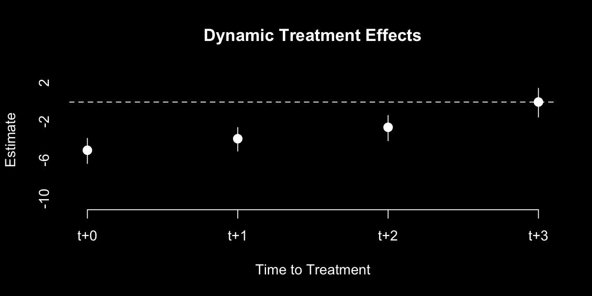

# packages needed:
library(PanelMatch)PanelMatch
non-staggered or staggered, absorbing or non-absorbing, binary treatment.
PanelMatch is an estimator for DiD that solves the issues with TWFE in staggered settings. It also accomodates non-absorbing treatment.
For every treated unit \(D_{it}=1\) in a specific time period \(t\), PanelMatch finds a group of untreated units \(D_{it} = 0\) in the same time period, that have identical past treatment history in a set number of previous treatment periods.
The number of pre-treatment history to match on is called the lag. For example, if lag = 4, then treated units are matched to untreated units with the same treatment history in the 4 periods before this period. When lag = 1, PanelMatch is equivalent to DIDmultiple.
Then, PanelMatch compares the outcome of the treated unit compared to the weighted average of the matched untreated units. When there are no covariates, each matched untreated unit is weighted equally in this weighted average. When there are covariates, weighting depends on the mahalanobis distance of covariates.
This comparison produces a series of treatment effect estimates (one for each treated unit). These are then properly aggregated together to find the causal effects.
PanelMatch requires us to pre-process the data with the PanelData() function:
We use the PanelData() function to clean our data to fit the later estimation functions.
# PanelMatch dislikes tidyverse df's, so do this:
df = df |> as.data.frame()
df.panel = PanelData(
panel.data = df, # your data
unit.id = "id", # your unit var (integer only)
time.id = "time", # your time period var (integer only)
treatment = "treat", # your treatment var
outcome = "outcome" # your outcome var
)Our dataset df should be a panel or repeated cross-section, and have the following variables:
| Variable | Description |
|---|---|
id |
A variable indicating the units/individual an observation belongs to in our data.* For PanelMatch, this must be integers. |
time |
A variable indicating time-periods in our study for each observation. |
outcome |
Outcome variable for each observation. |
covar |
(optional) covariate(s) to condition for parallel trends. |
*For repeated cross-section, the id variable should be instead the group/level of which treatment is assigned. For example, if treatment is assigned by county/state, use that as the id variable.
PanelMatch requires unit to be an integer variable. We can change a non-integer id into an integer by:
df$id <- as.integer(as.factor(df$id))Now, we can run the PanelMatch matching process to match based on lag-period pre-history:
We use the PanelMatch() function to complete the matching process.
match = PanelMatch(
# required arguments
lag = 4, # number of pre-periods to match treat history
panel.data = df.panel, # PanelData generated data
lead = c(0:3), # how many post-treat dynamic effects to estimate
qoi = "att",
refinement.method = "mahalanobis", # set to "none" if no covaraites
match.missing = T,
# optional arguments
covs.formula = ~ covar, # (optional, can exclude)
placebo.test = T # (optional, but may cause issues)
)This completes the matching process, but we still need to estimate the treatment effects.
Confusingly, the lag and lead are opposites in this package compared to traditional usage in difference-in-differences. Thus, please be careful when defining the lag = and lead = options.
- Lag refers to periods before the treatment in which to match on.
- Leads refer to periods after the treatment on which to match on.
If you are not using any covariates, you should change the argument refinement.method = to "none". If you do have covariates, it should remain "mahalanobis".
- This basically tells PanelMatch what weights to put on different observations when matching, and how to weight certain matches more than others based on the proximity of covariates.
The placebo test may cause issues, so if there are issues, change placebo.test = to F.
Now the matching process is complete, and aggregating the effects is now possible.
To aggregate all the matched comparisons into a singular ATT, we use the PanelEstimate() function.
match |>
PanelEstimate(
panel.data = df.panel, # PanelData object
pooled = T, # tells R to calculate ATT
moderator = NULL # optional. character string for var to calculate heterogenous effects
) |>
print()#> Point estimates:
#> [1] -3.617353
#> Standard errors:
#> [1] 0.6256079We can estimate dynamic treatment effects with the PanelEstimate() function:
match |>
PanelEstimate(
panel.data = df.panel, # PanelData object
pooled = F # tells R to calculate dynamic effects
) |>
plot(
ylab = "Estimate", # y-axis label
xlab = "Time to Treatment", # x-axis label
main = "Dynamic Effects" # title of plot
)
We can conduct pre-treatment period placebo tests (pre-treatment effects to test for parallel trends) as well. These are done with the placebo_test() function.
match |> placebo_test(
panel.data = df.panel, # PanelData object
lag.in = 4, # should equal lag in PanelMatch()
plot = T
)
Note: the estimate for the last pre-treatment period (t-1) is always 0, so it is not displayed.
Additional Resources
Imai, K., Kim, I. S., and Wang, E. (2023) ‘Matching Methods for Causal Inference with Time-Series Cross-Sectional Data’, American Journal of Political Science, 67(3), pp. 587-605. Available at: https://imai.fas.harvard.edu/research/tscs.html.
Additional Links:
- Package documentation for PanelMatch.
- Yiqing Xu’s section on PanelMatch.